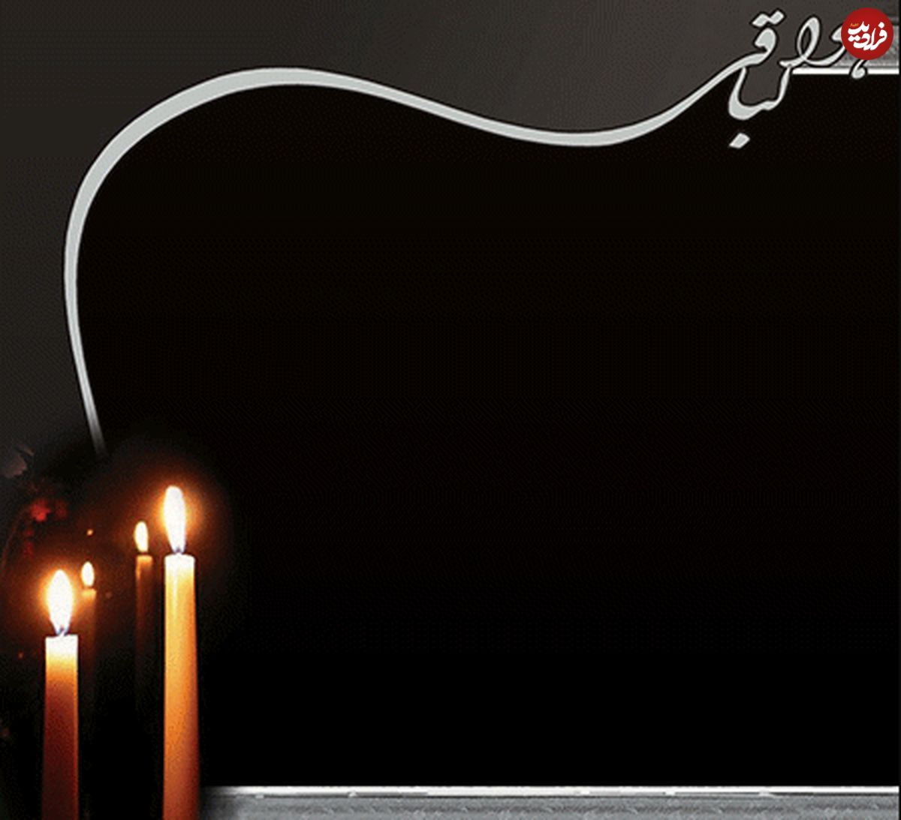
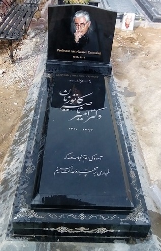

🚨 **هشدار:** طول عمر وبسایت تا روز دیگر به پایان میرسد!
[نام متوفی]


"و آنان که ایمان آوردند و عمل صالح انجام دادند، اهل بهشتاند و در آن جاودانه خواهند ماند."
تصاویر منتخب
در حال بارگذاری...
**روحش شاد و یادش گرامی.** از خدای بزرگ برای ایشان رحمت واسعه و برای بازماندگان صبر جزیل مسئلت داریم.
لطفاً یکی از بخشهای بالا را برای مشاهده زندگینامه، گالری و سایر اطلاعات انتخاب کنید.